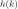
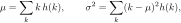
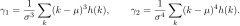
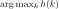
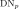
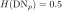
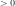
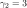
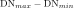
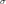

and variance
and variance Definition
With

the normalised histogram:

- mode:

; median:
with
; - skewness for symmetric distributions,

for a long right tail; - kurtosis

for a Gaussian; larger means heavier tails and a sharper peak.
For a symmetric unimodal histogram mean, median and mode coincide; with skew they separate (mode, median, mean in the direction of the tail).
- contrast:

, their ratio, or
.
Example
from scipy import stats
b = img[3].ravel().astype(float)
print(b.mean(), b.var(), np.median(b), stats.mode(b, keepdims=False).mode,
stats.skew(b), stats.kurtosis(b, fisher=False))Intuition
Mean and variance describe the bulk; skewness and kurtosis describe the tails, where the unusual pixels (clouds, fires, shadows) live.
Pitfall
Global statistics of a scene mix classes: a mean over forest and lake describes neither. Statistics are meaningful on homogeneous areas.